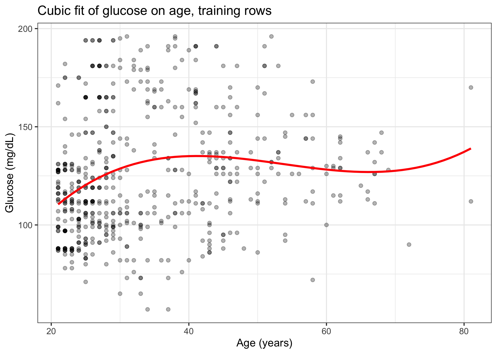
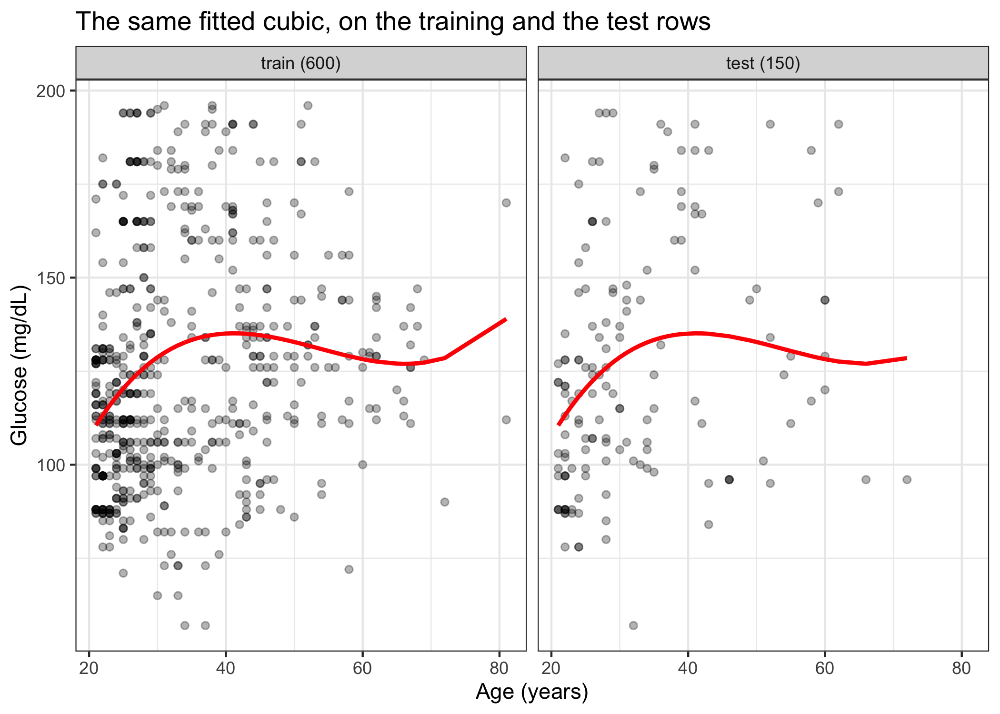
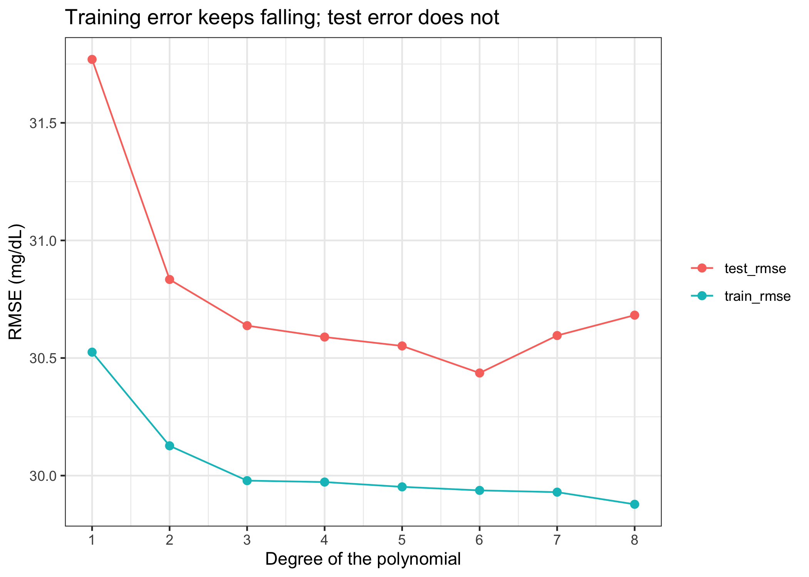
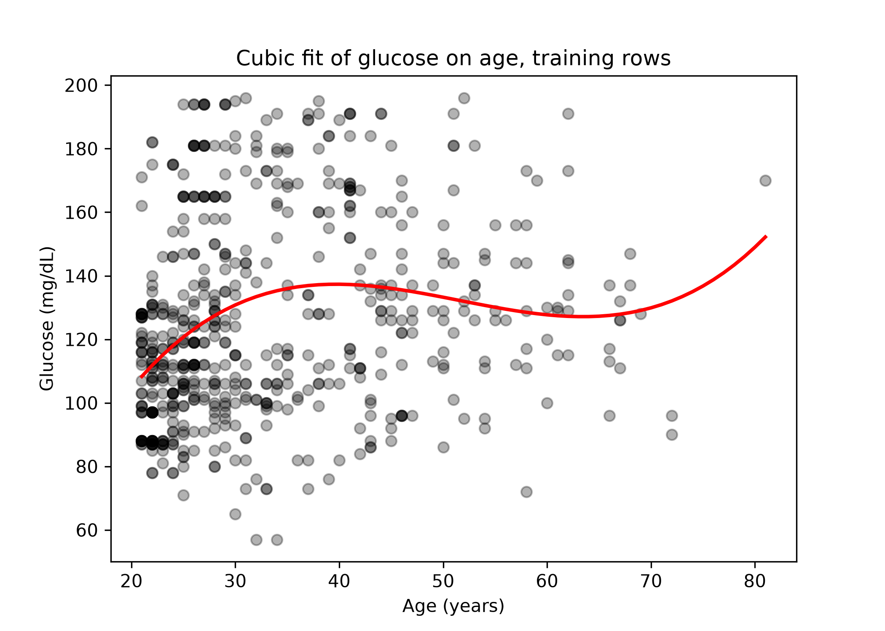
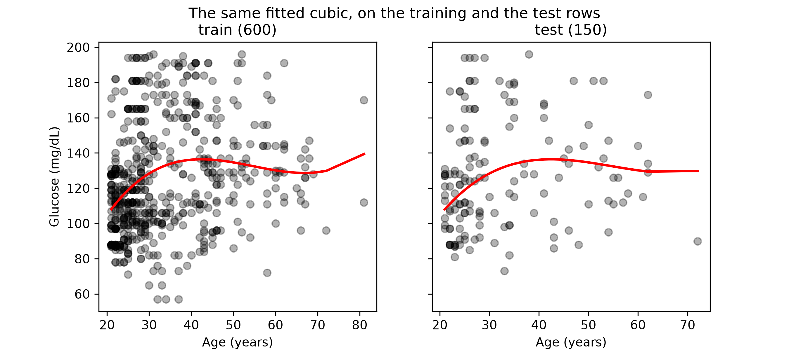
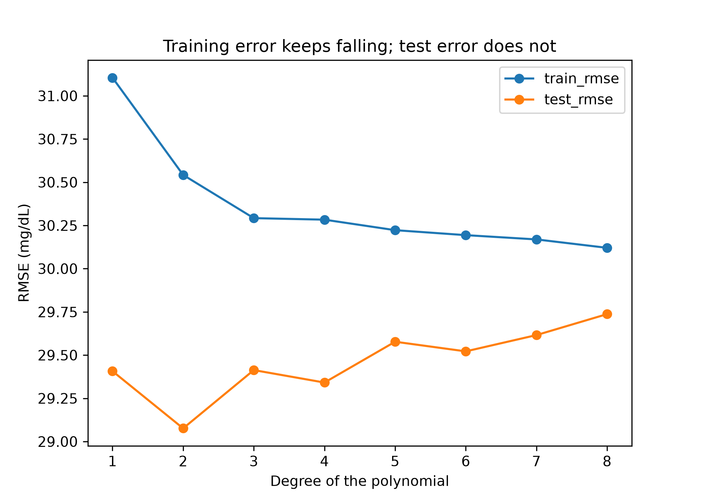

# Packages for this exercise. If one is missing, remove the # and run this line once:
# install.packages(c("tidyverse", "tidymodels"))
library(tidyverse)
library(tidymodels)
theme_set(theme_bw()) # white background for every plot
options(pillar.sigfig = 4) # show four significant figures in tablesExercise 5.1 — Evaluating a regression model on training and test data
On Day 3 you fitted a straight line to predict glucose and measured its error with a loss function. A model is only useful if it also predicts people it has not seen. In this exercise we fit a model on the training rows, predict both the training and the test rows, and compare the errors. The comparison tells us whether the model is overfitting (much better on training than on test) or underfitting (similar on both, but poor on both).
Suppose we believe that the relationship between glucose and age is not a straight line but a cubic:
\[\widehat{\text{glucose}} = \beta_0 + \beta_1\,\text{age} + \beta_2\,\text{age}^2 + \beta_3\,\text{age}^3\]
Theory: polynomial features as a pre-processing step; recipes, workflows and pipelines; predictions on training and test data; mean squared error, root mean squared error and mean absolute error; overfitting and underfitting.
NoteThe plots are for looking at
The code for every plot is folded away just above it, in case you are curious, and all of it is in the notebook linked at the top of each tab. You are not expected to write it yourself.
Download this exercise as an R Markdown notebook (.Rmd): the text and every code cell of the R version, including the code for the plots, with the blanks left for you to fill in. Open it in RStudio and run it a chunk at a time.
Packages and data
The data are in data/diabetes_clean.csv. We hold back every fifth person as the test set: 600 training patients and 150 test patients.
diabetes <- read_csv("data/diabetes_clean.csv") |>
select(glucose, mass, age, diabetes) |>
mutate(diabetes = factor(diabetes, levels = c("neg", "pos")))
test_rows <- seq(1, nrow(diabetes), by = 5) # every fifth person is held back
train <- diabetes[-test_rows, ]
test <- diabetes[test_rows, ]
dim(diabetes)#> [1] 750 4dim(train)#> [1] 600 4dim(test)#> [1] 150 4750 people: 600 for training (80%) and 150 for testing (20%).
Part 1 — A cubic model as a pre-processing step
To fit a cubic we do not need a new kind of model. We create new columns from age (its square and its cube) and fit an ordinary linear regression on them. Creating new columns from old ones is feature engineering, so in tidymodels it belongs in the recipe, alongside the other pre-processing steps you met on Day 2. step_poly() adds the polynomial columns:
cubic_spec <- linear_reg() |>
set_engine("lm")
cubic_rec <- recipe(glucose ~ age, data = train) |>
step_poly(age, degree = 3)Look at what the recipe does to the data. prep() works out the transformation from the training rows and bake(new_data = NULL) applies it to them:
cubic_rec |>
prep() |>
bake(new_data = NULL)#> # A tibble: 600 × 4
#> glucose age_poly_1 age_poly_2 age_poly_3
#> <dbl> <dbl> <dbl> <dbl>
#> 1 129 0.03702 -0.04407 -0.01452
#> 2 132 -0.02504 0.003851 0.01624
#> 3 184 0.01978 -0.04692 0.01713
#> 4 108 -0.03883 0.03639 -0.03213
#> 5 100 -0.0009021 -0.03393 0.03904
#> 6 88 -0.03883 0.03639 -0.03213
#> 7 73 -0.0009021 -0.03393 0.03904
#> 8 126 0.04392 -0.03944 -0.02768
#> 9 87 -0.04227 0.04576 -0.04920
#> 10 99 -0.02848 0.01124 0.006944
#> # ℹ 590 more rowsAge has been replaced by three columns, age_poly_1 to age_poly_3. They are not simply age, age² and age³: step_poly() makes orthogonal polynomials, rescaled versions that carry the same information but are uncorrelated with each other, which keeps the computer’s arithmetic accurate. The fitted curve is exactly the same cubic.
Now put the model and the recipe together in a workflow and fit it on the training rows:
cubic_wf <- workflow() |>
add_model(cubic_spec) |>
add_recipe(cubic_rec)
model_cubic <- cubic_wf |>
fit(data = train)
tidy(model_cubic)#> # A tibble: 4 × 5
#> term estimate std.error statistic p.value
#> <chr> <dbl> <dbl> <dbl> <dbl>
#> 1 (Intercept) 125.9 1.241 101.5 0
#> 2 age_poly_1 149.8 30.39 4.927 0.000001083
#> 3 age_poly_2 -144.3 30.39 -4.747 0.000002593
#> 4 age_poly_3 95.52 30.39 3.143 0.001756The four coefficients belong to the orthogonal columns, so they are hard to read on their own, and they differ from the ones you get in Python, which uses the raw powers of age. The predictions are identical in both languages, and the predictions are what we evaluate.
Here is the fitted cubic on top of the training data:
Code for this plot (optional)
age_grid <- data.frame(age = 21:81)
curve <- augment(model_cubic, age_grid)
ggplot(train, aes(x = age, y = glucose)) +
geom_point(alpha = 0.3) +
geom_line(data = curve, aes(y = .pred), colour = "red", linewidth = 1) +
labs(x = "Age (years)", y = "Glucose (mg/dL)",
title = "Cubic fit of glucose on age, training rows")
ImportantLearning points
- A polynomial model is a linear regression on new columns made from the predictor.
- Making those columns is pre-processing, so it lives in the recipe (R) or the pipeline (Python), together with the model.
- R’s
step_poly()uses orthogonal polynomials and Python’sPolynomialFeatures()uses raw powers: different coefficients, identical predictions.
Part 2 — Predictions on the training and the test rows
We want to know whether the model generalises: does it predict new people as well as the people it was fitted on? So we predict both sets. predict() gives a column .pred:
predict(model_cubic, new_data = train) |>
head()#> # A tibble: 6 × 1
#> .pred
#> <dbl>
#> 1 136.5
#> 2 123.2
#> 3 137.3
#> 4 111.8
#> 5 134.4
#> 6 111.8It is easier to keep the predictions next to the data. augment() does that in one step: it adds the prediction .pred and the residual .resid (observed minus predicted) to each row. Do it for the training rows and the test rows:
train_preds <- augment(model_cubic, new_data = train)
test_preds <- augment(model_cubic, new_data = test)
head(test_preds)#> # A tibble: 6 × 6
#> .pred .resid glucose mass age diabetes
#> <dbl> <dbl> <dbl> <dbl> <dbl> <fct>
#> 1 127.4 66.57 194 28.5 28 neg
#> 2 128.5 -11.49 117 30.1 58 pos
#> 3 118.0 3.998 122 57.3 24 neg
#> 4 120.7 -9.716 111 26.8 25 neg
#> 5 127.2 14.76 142 39.5 62 pos
#> 6 111.8 -9.807 102 28.9 22 negThe first test person is 28 years old with a glucose of 194, and the model predicts 127.4 for them: an error of 66.6 mg/dL, a person the model gets badly wrong.
Code for this plot (optional)
both_sets <- bind_rows(train_preds |> mutate(set = "train (600)"),
test_preds |> mutate(set = "test (150)")) |>
mutate(set = factor(set, levels = c("train (600)", "test (150)"))) # train first
ggplot(both_sets, aes(x = age, y = glucose)) +
geom_point(alpha = 0.3) +
geom_line(aes(y = .pred), colour = "red", linewidth = 1) +
facet_wrap(~ set) +
labs(x = "Age (years)", y = "Glucose (mg/dL)",
title = "The same fitted cubic, on the training and the test rows")
ImportantLearning points
- The model is fitted on the training rows only; the test rows are used for predicting, never for fitting.
- Keep the predictions next to the data:
augment()in R, a new column in Python.
Part 3 — Measuring the error, by hand and with a package
For a regression model the error of one person is \(y_i - \hat{y}_i\), the observed glucose minus the predicted glucose. Three summaries of these errors are used everywhere; you met them as loss functions on Day 3:
\[\text{MSE} = \frac{1}{n}\sum_{i=1}^{n}(y_i - \hat{y}_i)^2 \qquad \text{RMSE} = \sqrt{\text{MSE}} \qquad \text{MAE} = \frac{1}{n}\sum_{i=1}^{n}|y_i - \hat{y}_i|\]
RMSE and MAE are in the units of the outcome, mg/dL, so they can be read as “the typical size of an error”. MSE is in squared units. Compute all three on the training rows, one step at a time:
train_preds |>
mutate(error = glucose - .pred) |>
summarise(MSE = mean(error^2),
RMSE = sqrt(MSE),
MAE = mean(abs(error)))#> # A tibble: 1 × 3
#> MSE RMSE MAE
#> <dbl> <dbl> <dbl>
#> 1 917.6 30.29 24.61On the training rows the typical error is about 30 mg/dL (RMSE 30.29, MAE 24.61). Now do the same for the test rows:
# Replace every ______ below, then run this cell.
test_preds |>
mutate(error = ______) |>
summarise(MSE = mean(error^2),
RMSE = ______,
MAE = mean(abs(error)))
TipStuck?
Copy the training cell and change train_preds to test_preds. The error is the observed glucose minus the prediction .pred, and RMSE is the square root of MSE.
You will compute these metrics for every model you build, so packages already do it. In tidymodels they come from yardstick: each metric takes the data, the column with the truth and the column with the prediction. metric_set() bundles several metrics into one function:
rmse(train_preds, truth = glucose, estimate = .pred)#> # A tibble: 1 × 3
#> .metric .estimator .estimate
#> <chr> <chr> <dbl>
#> 1 rmse standard 30.29reg_metrics <- metric_set(rmse, mae)
reg_metrics(train_preds, truth = glucose, estimate = .pred)#> # A tibble: 2 × 3
#> .metric .estimator .estimate
#> <chr> <chr> <dbl>
#> 1 rmse standard 30.29
#> 2 mae standard 24.61The same numbers as by hand. Check the test rows with the package as well:
# Replace every ______ below, then run this cell.
reg_metrics(______, truth = glucose, estimate = ______)Question! The model is about as good on the test rows as on the training rows. Is it overfitting? Is it a good model? A typical error of 30 mg/dL, when most glucose values lie between 80 and 180, is large. What would you try next?
The errors are similar on both sets, so there is no sign of overfitting. But they are large on both, which is underfitting: age alone cannot capture what drives a person’s glucose, whatever the shape of the curve. The natural next step is to add predictors, not to make the curve more flexible.
ImportantLearning points
- MSE, RMSE and MAE summarise the errors \(y_i - \hat{y}_i\); RMSE and MAE are in the units of the outcome.
- Always compute them on both the training and the test rows, and compare.
- Much better on training than on test: overfitting. Similar but poor on both: underfitting.
Part 4 — More flexible is not more accurate
Was the cubic the right choice? Fit polynomials of degree 1 (a straight line) up to 8, and record the training and test RMSE of each. The code is the same as in Part 1 with a different degree, repeated in a loop:
degree_results <- data.frame()
for (d in 1:8) {
poly_wf <- workflow() |>
add_model(linear_reg()) |>
add_recipe(recipe(glucose ~ age, data = train) |>
step_poly(age, degree = d))
poly_fit <- poly_wf |>
fit(data = train)
train_rmse <- augment(poly_fit, new_data = train) |>
rmse(truth = glucose, estimate = .pred)
test_rmse <- augment(poly_fit, new_data = test) |>
rmse(truth = glucose, estimate = .pred)
degree_results <- bind_rows(degree_results,
data.frame(degree = d,
train_rmse = train_rmse$.estimate,
test_rmse = test_rmse$.estimate))
}
degree_results#> degree train_rmse test_rmse
#> 1 1 31.10499 29.40714
#> 2 2 30.54229 29.07622
#> 3 3 30.29231 29.41330
#> 4 4 30.28348 29.34117
#> 5 5 30.22276 29.57734
#> 6 6 30.19395 29.52159
#> 7 7 30.16924 29.61574
#> 8 8 30.12057 29.73709Code for this plot (optional)
degree_results |>
pivot_longer(c(train_rmse, test_rmse), names_to = "set", values_to = "RMSE") |>
ggplot(aes(x = degree, y = RMSE, colour = set)) +
geom_line() +
geom_point(size = 2) +
scale_x_continuous(breaks = 1:8) +
labs(x = "Degree of the polynomial", y = "RMSE (mg/dL)", colour = NULL,
title = "Training error keeps falling; test error does not")
The training RMSE falls with every extra degree, from 31.10 for the straight line to 30.12 for degree 8: a more flexible curve can always follow the training points more closely. The test RMSE does not follow. It is lowest at degree 2 (29.08) and highest at degree 8 (29.74). The extra flexibility is spent on the noise of these particular 600 people, which does not repeat in new people. With 600 people and a single predictor the effect is small; with fewer people or more flexible models it can be very large.
Question! Which degree would you choose, and on which data did you base the choice? (Look again at the Stretch below.)
ImportantLearning points
- Training error always improves as a model becomes more flexible, so it cannot be used to choose how flexible a model should be.
- Test error stops improving, and starts to get worse, once the model fits noise: that is overfitting.
Download this exercise as a Jupyter notebook (.ipynb): the text and every code cell of the Python version, including the code for the plots, with the blanks left for you to fill in. Open it in Jupyter or VS Code and run it a cell at a time.
Packages and data
# Packages for this exercise. If one is missing, install it once from a terminal
# (in a Jupyter notebook, type %pip instead of pip):
# pip install pandas numpy matplotlib scikit-learn
import pandas as pd
import numpy as np
import matplotlib.pyplot as plt
from sklearn.pipeline import Pipeline
from sklearn.preprocessing import PolynomialFeatures
from sklearn.linear_model import LinearRegressionThe data are in data/diabetes_clean.csv. We hold back every fifth person as the test set: 600 training patients and 150 test patients.
diabetes = pd.read_csv("data/diabetes_clean.csv")
diabetes = diabetes[["glucose", "mass", "age", "diabetes"]]
is_test = diabetes.index % 5 == 0 # every fifth person is held back
train = diabetes[~is_test]
test = diabetes[is_test]
print(diabetes.shape)#> (750, 4)print(train.shape)#> (600, 4)print(test.shape)#> (150, 4)750 people: 600 for training (80%) and 150 for testing (20%).
Part 1 — A cubic model as a pre-processing step
To fit a cubic we do not need a new kind of model. We create new columns from age (its square and its cube) and fit an ordinary linear regression on them. Creating new columns from old ones is feature engineering, so in scikit-learn it is a step of the pipeline, alongside the other pre-processing steps you met on Day 2. PolynomialFeatures() adds the polynomial columns:
poly_step = PolynomialFeatures(degree=3, include_bias=False) # age, age^2, age^3Look at what the step does to the data. fit_transform() works out the transformation from the training rows and applies it to them:
cubic_features = poly_step.fit_transform(train[["age"]])
pd.DataFrame(cubic_features, columns=poly_step.get_feature_names_out()).head(10)#> age age^2 age^3
#> 0 44.0 1936.0 85184.0
#> 1 26.0 676.0 17576.0
#> 2 39.0 1521.0 59319.0
#> 3 22.0 484.0 10648.0
#> 4 33.0 1089.0 35937.0
#> 5 22.0 484.0 10648.0
#> 6 33.0 1089.0 35937.0
#> 7 46.0 2116.0 97336.0
#> 8 21.0 441.0 9261.0
#> 9 25.0 625.0 15625.0The three columns are age, age² and age³. The squared and cubed values are large (81³ = 531441), which is fine for a cubic.
Now put the polynomial step and the model together in a pipeline and fit it on the training rows:
cubic_pipe = Pipeline([
("poly", PolynomialFeatures(degree=3, include_bias=False)),
("model", LinearRegression()),
])
cubic_pipe = cubic_pipe.fit(train[["age"]], train["glucose"])
print("intercept: ", round(cubic_pipe["model"].intercept_, 3))#> intercept: -44.036print("coefficients:", cubic_pipe["model"].coef_)#> coefficients: [ 1.15444274e+01 -2.36367607e-01 1.52779710e-03]The coefficients belong to age, age² and age³. They differ from the ones you get in R, where step_poly() uses orthogonal polynomials, but the predictions are identical in both languages, and the predictions are what we evaluate.
Here is the fitted cubic on top of the training data:
Code for this plot (optional)
age_grid = pd.DataFrame({"age": np.arange(21, 82)})
curve = cubic_pipe.predict(age_grid)
fig, ax = plt.subplots()
ax.scatter(train["age"], train["glucose"], alpha=0.3, color="black")
ax.plot(age_grid["age"], curve, color="red", linewidth=2)
ax.set_xlabel("Age (years)")
ax.set_ylabel("Glucose (mg/dL)")
ax.set_title("Cubic fit of glucose on age, training rows")
plt.show()
ImportantLearning points
- A polynomial model is a linear regression on new columns made from the predictor.
- Making those columns is pre-processing, so it lives in the recipe (R) or the pipeline (Python), together with the model.
- R’s
step_poly()uses orthogonal polynomials and Python’sPolynomialFeatures()uses raw powers: different coefficients, identical predictions.
Part 2 — Predictions on the training and the test rows
We want to know whether the model generalises: does it predict new people as well as the people it was fitted on? So we predict both sets. predict() gives an array of predictions:
cubic_pipe.predict(train[["age"]])[:6].round(2)#> array([136.45, 123.19, 137.31, 111.81, 134.43, 111.81])It is easier to keep the predictions next to the data. Copy each data set and add the predictions as a new column pred, for the training rows and the test rows:
train_preds = train.copy()
train_preds["pred"] = cubic_pipe.predict(train[["age"]])
test_preds = test.copy()
test_preds["pred"] = cubic_pipe.predict(test[["age"]])
test_preds.head().round(2)#> glucose mass age diabetes pred
#> 0 194 28.5 28 neg 127.43
#> 5 117 30.1 58 pos 128.49
#> 10 122 57.3 24 neg 118.00
#> 15 111 26.8 25 neg 120.72
#> 20 142 39.5 62 pos 127.24The first test person is 28 years old with a glucose of 194, and the model predicts 127.4 for them: an error of 66.6 mg/dL, a person the model gets badly wrong.
Code for this plot (optional)
fig, axes = plt.subplots(1, 2, figsize=(9, 4), sharey=True)
for ax, data, name in [(axes[0], train_preds, "train (600)"), (axes[1], test_preds, "test (150)")]:
data = data.sort_values("age")
ax.scatter(data["age"], data["glucose"], alpha=0.3, color="black")
ax.plot(data["age"], data["pred"], color="red", linewidth=2)
ax.set_title(name)
ax.set_xlabel("Age (years)")
axes[0].set_ylabel("Glucose (mg/dL)")
fig.suptitle("The same fitted cubic, on the training and the test rows")
plt.show()
ImportantLearning points
- The model is fitted on the training rows only; the test rows are used for predicting, never for fitting.
- Keep the predictions next to the data:
augment()in R, a new column in Python.
Part 3 — Measuring the error, by hand and with a package
For a regression model the error of one person is \(y_i - \hat{y}_i\), the observed glucose minus the predicted glucose. Three summaries of these errors are used everywhere; you met them as loss functions on Day 3:
\[\text{MSE} = \frac{1}{n}\sum_{i=1}^{n}(y_i - \hat{y}_i)^2 \qquad \text{RMSE} = \sqrt{\text{MSE}} \qquad \text{MAE} = \frac{1}{n}\sum_{i=1}^{n}|y_i - \hat{y}_i|\]
RMSE and MAE are in the units of the outcome, mg/dL, so they can be read as “the typical size of an error”. MSE is in squared units. Compute all three on the training rows, one step at a time:
train_error = train_preds["glucose"] - train_preds["pred"]
train_mse = np.mean(train_error ** 2)
train_rmse = np.sqrt(train_mse)
train_mae = np.mean(np.abs(train_error))
print("MSE: ", round(train_mse, 2))#> MSE: 917.62print("RMSE:", round(train_rmse, 2))#> RMSE: 30.29print("MAE: ", round(train_mae, 2))#> MAE: 24.61On the training rows the typical error is about 30 mg/dL (RMSE 30.29, MAE 24.61). Now do the same for the test rows:
# Replace every ______ below, then run this cell.
test_error = ______
test_mse = np.mean(test_error ** 2)
test_rmse = ______
test_mae = np.mean(np.abs(test_error))
print("MSE: ", round(test_mse, 2))
print("RMSE:", round(test_rmse, 2))
print("MAE: ", round(test_mae, 2))
TipStuck?
Copy the training cell and change train_preds to test_preds. The error is the observed glucose minus the prediction pred, and RMSE is the square root of MSE.
You will compute these metrics for every model you build, so packages already do it. In scikit-learn they are in sklearn.metrics: each takes the truth first and the prediction second.
from sklearn.metrics import mean_squared_error, root_mean_squared_error, mean_absolute_error
print("train MSE: ", round(mean_squared_error(train_preds["glucose"], train_preds["pred"]), 2))#> train MSE: 917.62print("train RMSE:", round(root_mean_squared_error(train_preds["glucose"], train_preds["pred"]), 2))#> train RMSE: 30.29print("train MAE: ", round(mean_absolute_error(train_preds["glucose"], train_preds["pred"]), 2))#> train MAE: 24.61The same numbers as by hand. Check the test rows with the package as well:
# Replace every ______ below, then run this cell.
print("test MSE: ", round(mean_squared_error(______, ______), 2))
print("test RMSE:", round(root_mean_squared_error(test_preds["glucose"], test_preds["pred"]), 2))
print("test MAE: ", round(mean_absolute_error(test_preds["glucose"], test_preds["pred"]), 2))Question! The model is about as good on the test rows as on the training rows. Is it overfitting? Is it a good model? A typical error of 30 mg/dL, when most glucose values lie between 80 and 180, is large. What would you try next?
The errors are similar on both sets, so there is no sign of overfitting. But they are large on both, which is underfitting: age alone cannot capture what drives a person’s glucose, whatever the shape of the curve. The natural next step is to add predictors, not to make the curve more flexible.
ImportantLearning points
- MSE, RMSE and MAE summarise the errors \(y_i - \hat{y}_i\); RMSE and MAE are in the units of the outcome.
- Always compute them on both the training and the test rows, and compare.
- Much better on training than on test: overfitting. Similar but poor on both: underfitting.
Part 4 — More flexible is not more accurate
Was the cubic the right choice? Fit polynomials of degree 1 (a straight line) up to 8, and record the training and test RMSE of each. The code is the same as in Part 1 with a different degree, repeated in a loop. One change: age is scaled first with StandardScaler(). Age to the power 8 has fifteen digits, too many for the computer’s arithmetic to stay accurate; scaling first keeps the numbers small and gives the same predictions.
from sklearn.preprocessing import StandardScaler
rows = []
for d in range(1, 9):
poly_pipe = Pipeline([
("scale", StandardScaler()),
("poly", PolynomialFeatures(degree=d, include_bias=False)),
("model", LinearRegression()),
])
poly_pipe = poly_pipe.fit(train[["age"]], train["glucose"])
train_rmse = root_mean_squared_error(train["glucose"], poly_pipe.predict(train[["age"]]))
test_rmse = root_mean_squared_error(test["glucose"], poly_pipe.predict(test[["age"]]))
rows.append({"degree": d, "train_rmse": train_rmse, "test_rmse": test_rmse})
degree_results = pd.DataFrame(rows)
degree_results.round(3)#> degree train_rmse test_rmse
#> 0 1 31.105 29.407
#> 1 2 30.542 29.076
#> 2 3 30.292 29.413
#> 3 4 30.283 29.341
#> 4 5 30.223 29.577
#> 5 6 30.194 29.522
#> 6 7 30.169 29.616
#> 7 8 30.121 29.737Code for this plot (optional)
fig, ax = plt.subplots()
ax.plot(degree_results["degree"], degree_results["train_rmse"], marker="o", label="train_rmse")
ax.plot(degree_results["degree"], degree_results["test_rmse"], marker="o", label="test_rmse")
ax.set_xlabel("Degree of the polynomial")
ax.set_ylabel("RMSE (mg/dL)")
ax.set_title("Training error keeps falling; test error does not")
ax.legend()
plt.show()
The training RMSE falls with every extra degree, from 31.10 for the straight line to 30.12 for degree 8: a more flexible curve can always follow the training points more closely. The test RMSE does not follow. It is lowest at degree 2 (29.08) and highest at degree 8 (29.74). The extra flexibility is spent on the noise of these particular 600 people, which does not repeat in new people. With 600 people and a single predictor the effect is small; with fewer people or more flexible models it can be very large.
Question! Which degree would you choose, and on which data did you base the choice? (Look again at the Stretch below.)
ImportantLearning points
- Training error always improves as a model becomes more flexible, so it cannot be used to choose how flexible a model should be.
- Test error stops improving, and starts to get worse, once the model fits noise: that is overfitting.
Stretch
NoteStretch — choosing with the test set spends the test set
Part 4 chose a degree by looking at the test RMSE, and the test RMSE of that degree is now an optimistic estimate of how it will do on new people. How could you choose the degree using the training rows only, and keep the test rows for one final check? Try it: split the 600 training rows again into 480 and 120, choose the degree on the 120, then report the test RMSE once.